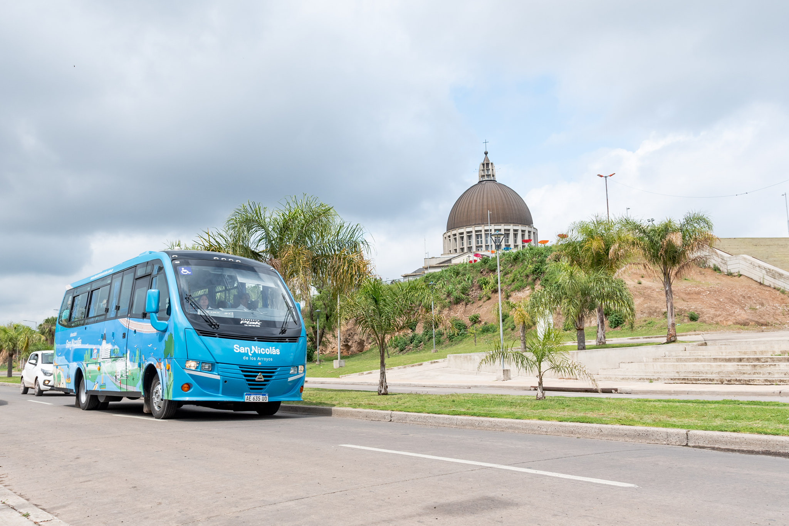

Our city
San Nicolas de los Arroyos
Paseo costanero
San Nicolás de los Arroyos (also referred to simply as San Nicolás) is an Argentine city, head of the San Nicolás party. It is located in the extreme north of the Province of Buenos Aires, on the Paraná River and on the side of the Buenos Aires - Rosario Highway. It is located 234 km from the Autonomous City of Buenos Aires, 72 km from Pergamino and 69 km from Rosario. Its road accesses are km 231 of National Route 9 (Rosario - Buenos Aires highway) in a north-south direction. Route 188 in an east-west direction connects it with the Pacific Ocean corridor Route 9. On the side of the highway (RN 9) is "El Parador" of buses. On the other hand, it is crossed by the General Miter railway, operated by the Nuevo Central Argentino company, in a north-south direction. The city has a bus terminal station; and loading-unloading with railways at the foot of cranes of the Paraná waterway, with an important port at km 243, which serves the industrial and cereal industry.
